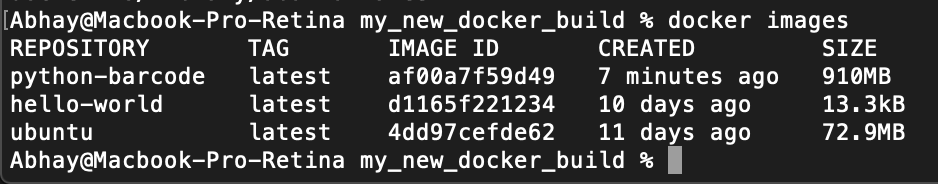
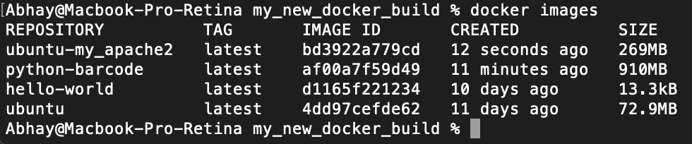
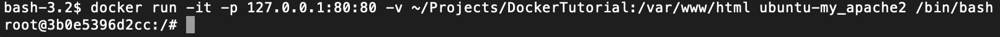
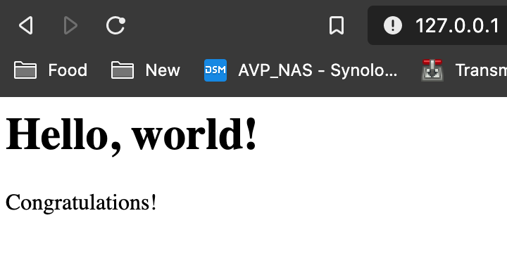

Docker is a platform that provides OS level virtualization without large overhead that virtualization needs. It can be useful to deploy containerized software.
For this tutorial we will demonstrate the power of Docker by creating a quick and easy web server that can be used to develop new web applications.
To get a web server running in docker, there are some crucial steps to make sure we have completed first.
Prerequisites
Please make sure to install docker for your local machine and also run the docker hello world test to make sure the installation was successful.
Let's Start!
Step 1:
In your command line enter the following command: docker pull ubuntu
This command will pull the latest ubuntu container image from DockerHub. You should see ubuntu under repository
when executing the following command:
docker images

Step 2:
Next run the ubuntu image to start a Docker container. You can then log into this Ubuntu container using the following command:
docker run -it ubuntu:latest /bin/bash
Step 3:
Make sure to update the system before doing anything further with the following command:
apt-get update
Step 4:
Install apache using the following command: apt-get install apache2
Step 5:
Install vim using the following command:apt-get install vim
Step 6:
Now we can exit the ubuntu container using the command: exit
Step 7:
We can then commit the container to create a new Docker image but first we need to find the container id using the following command: docker ps -a
Step 8:
Next create a new Docker image using docker commit 'container_id' 'container_image_name'. 'container_id' should be replaced with the actual container ID and 'container_image_name' should be replaced with the name of a new Docker image.

Step 9:
Check to see if the new image was created using the following command: docker images
Step 10:
Using the following command to connect your local working directory with the docker image:
docker run -it -p 127.0.0.1:80:80 -v 'local_directory_path':/var/www/html 'container_image_name' /bin/bash
'local_directory_path' should be replaced with the actual directory path of your working directory and 'container_image_name' should be replaced with the container image name

Step 11:
Now that we are in the container, we can create an index.html file for our web server. Use the following command to go to the root of the web server directory:
cd /var/www/html
Step 12:
Create an index.html file using the command: vi index.html
Press the i key to edit the file and add any html code within the file then enter the following keys to save and return to the command line: :wq
Step 13:
Now we can start the apache service using the following command: /etc/init.d/apache2 restart
Step 14:
Finally go to your browser and go to the following web address to see your web page: http://127.0.0.1
